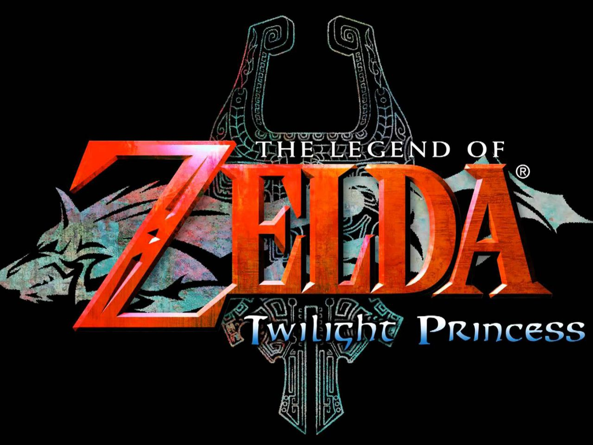

Juegos
| Nombre | Consola | Año de salida | Portada | Puntuación |
|---|---|---|---|---|
| The Legend of Zelda: Breath of the Wild | WiiU y Switch | 2017 |  |
9,6 |
| The Legend of Zelda: Twilight Princess | GameCube Wii Wii U | 2006 |  | 10 |
| The Legend of Zelda: Skyward Sword | Wii y Switch(Proxima mente) | 2011 |  |
9,5 |
| The Legend of Zelda: Majora's Mask | Nintendo 64 Nintendo 3DS Nintendo GameCube | 2000 |  |
9,4 |
| The Legend of Zelda: Ocarina of Time | Nintendo64 Nintendo GameCube y Nintendo3DS | 1998 |  |
9,5 |
| The Legend of Zelda: The Wind Waker | GameCube Wii U | 2002 |  |
9,5 |
| Puntuación de la saga | 8,64 | |||